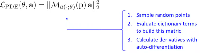

Using PINN for Inverse Problems
Last edited: 2024-05-28
My personal notes about the seminar Using Physics-informed Neural Networks for Inverse Problems by João Pereira - IMPA at National Scientific Computing Laboratory (LNCC) on 2024-05-13.
Presentation generated from the video: PINN-Presentation-Pereira.pdf (in Portuguese)
The seminar mainly deals with two published articles, and also a third that has not yet been published:
Hasan, A., Pereira, J. M., Ravier, R., Farsiu, S., & Tarokh, V. (2019). Learning Partial Differential Equations from Data Using Neural Networks. http://arxiv.org/abs/1910.10262
Hasan, A., M. Pereira, J., Farsiu, S., & Tarokh, V. (2022). Identifying Latent Stochastic Differential Equations. IEEE Transactions on Signal Processing, 70, 89–104. https://doi.org/10.1109/TSP.2021.3131723
Bizzi, A., L. Nissenbaum, Pereira, J. M. (In Preparation) Neural Conjugate Flows: a Physics-Informed Architecture with Differential Flow Structure.
PINN
- The various PDEs can be seen as a simple linear combination
| Equation | PDE |
|---|---|
| Wave (1D) | \(u_{tt} - u_{xx} = 0\) |
| Heat (1D) | \(u_{t} - u_{xx} = 0\) |
| Helmholtz (2D) | \(u_{xx} + u_{yy} + u= 0\) |
| Burgers (1D) | \(u_{t} + uu_{x} = 0\) |
| Korteweg-de Vries | \(u_{t} - 6uu_{x} + u_{xxx}= 0\) |
-
The problem is to determine the PDE that best represents the data
-
Initially, a set of possible derivative terms is estimated

-
Let \(p_1, …, p_k\) be sample random points in the domain
-
If \(u\) is a solution of the PDE
\(a_1 u + a_2 u_{xx} + a_3 uu_x + a_4 u_{xxx} + a_5 u_t = 0\)
- For all \(p_1, …, p_k\)
$a_1 u (p_k) + a_2 u_{xx} (p_k) + a_3 u (p_k) u_x(p_k) + a_4 u_{xxx} (p_k) + a_5 u_t (p_k) = 0 $
- In matrix form:
\(\underbrace{ \left[ \begin{array}{c c c c} u(p_1) & u_{x x}(p_1) & u(p_1)u_x(p_1)& u_{x x x}(p_1) & u_t(p_1) \\\ \vdots & \vdots & \vdots & \vdots & \vdots \\\ u(p_k) & u_{x x}(p_k) & u(p_k)u_x(p_k) & u_{x x x}(p_k) & u_t(p_k) \end{array} \right] }_{\mathcal{M}_u(p)} \left[ \begin{array}{c} a_1 \\\ \vdots \\\ a_5 \end{array} \right]=0\)
- The vector \(a = (a_1, ..., a_5)\) is in the null space of \(\mathcal{M}_u(p)\)
- In matrix form: \(\mathcal{M}_u(p) a = 0\)
- The null space vector is a singular vector with singular value 0
- The null space vector (also known as the null vector) refers to the zero vector in the context of linear algebra
- The null space vector is simply the zero vector itself: 0
- It is the unique vector that belongs to the null space of any matrix
- When we say null space vector, we are referring to the specific vector v that satisfies the condition Av = 0 for a given matrix A
- Let's think about optimization
- Calculate the smallest singular value using the min-max principle
$ \underset{ a }{ \min } \quad | \mathcal{M}_u(p) a |_2^2 $
subject to $ \quad | a |_2 = 1 \quad $ (Euclidean norm)
$ | a |_2 = \sqrt{a_1^2 + \cdots + a_n^2} $
-
Bringing together the losses
-
Fitting the neural network \(\hat{u}(\cdot;\theta)\)
- Learning the PDE

- Encourage law sparsity

- Training
- Minimizing \(\mathcal{L}_{PDE} (\theta,a)\) in terms of \(\theta\) enforces that the ANN is a solution to the PDE being learned.
Stochastic PINN
- (in construction)
Links of interest
- I WANT SCIENCE. Artificial Intelligence and Physics: Solving Inverse Problems with Neural Networks (in Portuguese).
- Schedule of the event where the lecture was given (in Portuguese).